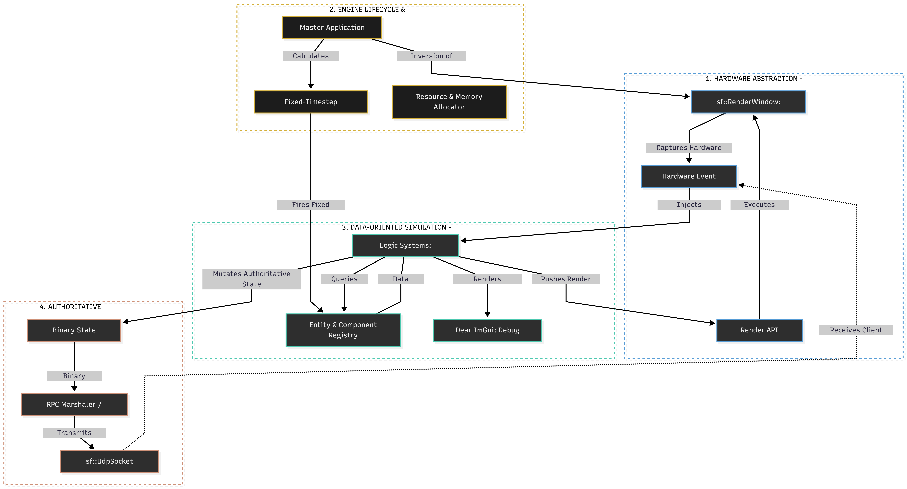

ROLE: Lead Engineer, Systems Architect

Engine modularity: Decoupling Hardware Abstraction (SFML) from the ECS Simulation layer.
Implementation of the Engine lifecycle. Demonstrates resource-aware initialization, robust .ini parsing, and hardware abstraction layer (HAL) isolation.
// ------------------------------------------------------------------------------------------------
// Engine.h - Interface Definition
// ------------------------------------------------------------------------------------------------
#pragma once
#include <SFML/Graphics.hpp>
#include <string>
#include <unordered_map>
namespace Flow {
struct EngineConfig {
uint32_t WindowWidth = 800;
uint32_t WindowHeight = 600;
std::string WindowName = "Flow Engine";
bool bIsFullscreen = false;
};
class Engine {
public:
Engine() = default;
~Engine() = default;
void InitializeEngine();
void ShutdownEngine();
// Const-correct accessors for system integrity
const sf::RenderWindow& GetWindow() const noexcept { return Window; }
bool IsRunning() const noexcept { return bIsEngineRunning; }
private:
sf::RenderWindow Window;
bool bIsEngineRunning = false;
EngineConfig Config;
std::unordered_map<std::string, std::string> RawConfigData;
void LoadConfigurationFile(const std::string& FilePath);
};
}
// ------------------------------------------------------------------------------------------------
// Engine.cpp - Implementation
// ------------------------------------------------------------------------------------------------
#include "Engine.h"
#include <fstream>
namespace Flow {
void Engine::LoadConfigurationFile(const std::string& FilePath) {
std::ifstream File(FilePath);
if (!File.is_open()) return;
std::string Line;
while (std::getline(File, Line)) {
const size_t DelimiterPos = Line.find('=');
if (DelimiterPos != std::string::npos) {
RawConfigData[Line.substr(0, DelimiterPos)] = Line.substr(DelimiterPos + 1);
}
}
// Defensive parsing with default fallbacks
if (RawConfigData.count("WindowWidth")) Config.WindowWidth = std::stoul(RawConfigData.at("WindowWidth"));
if (RawConfigData.count("WindowName")) Config.WindowName = RawConfigData.at("WindowName");
}
void Engine::InitializeEngine() {
LoadConfigurationFile("Engine.ini");
const sf::VideoMode Mode{ Config.WindowWidth, Config.WindowHeight };
const sf::Style Style = Config.bIsFullscreen ? sf::Style::Fullscreen : sf::Style::Default;
Window.create(Mode, Config.WindowName, Style);
bIsEngineRunning = Window.isOpen();
}
void Engine::ShutdownEngine() {
if (Window.isOpen()) Window.close();
bIsEngineRunning = false;
}
}